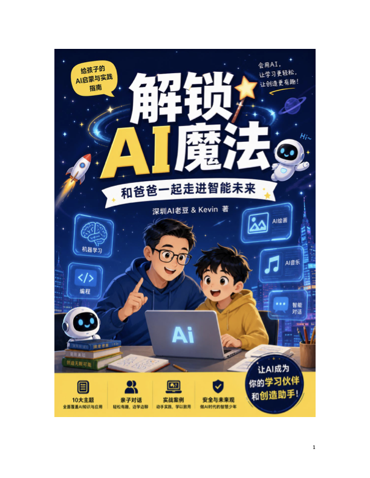

解锁 AI 魔法
和爸爸一起走进智能未来
适合亲子共读，用生活化问题理解人工智能、模型、提示词和未来能力。 开始阅读AI 学习书架
和爸爸一起走进智能未来
适合亲子共读，用生活化问题理解人工智能、模型、提示词和未来能力。 开始阅读待加入
待加入

网页版导读
把 AI 看成一种会从大量例子里总结规律的工具。它不是魔法师，而是能帮我们观察、分类、生成和推理的智能伙伴。
好问题会带来好答案。学习描述目标、补充背景、给出限制条件，是使用 AI 的第一项核心能力。
AI 可能会答错，也可能遗漏信息。读者需要学会追问、核对来源、比较不同答案，并保留自己的判断。
可以让 AI 帮忙解释知识点、设计小游戏、整理读书笔记、生成创意草稿，但最后的理解和作品要由自己完成。
在线阅读